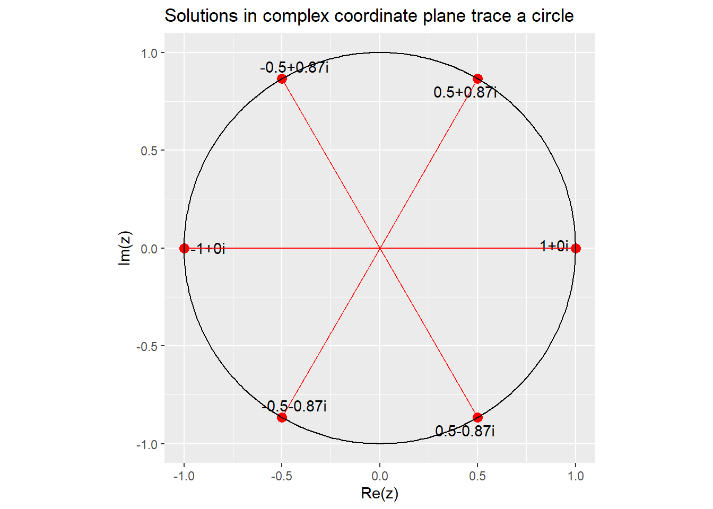

Roots of Unity
The problem
We’d like to solve equations of the form \(z^n = 1\) such as \(z^5 = 1\) or \(z^3 = 1\) where \(z\) is a complex number. If we try to solve these with our existing methods, undoing each operation with inverse operations, we only get 1 solution: \(z = 1\). The difficulty this presents is that the Fundamental Theorem of Algebra states that an nth degree polynomial should have n solutions, so where are the remaining solutions and how can they be solved for? The solution lies, unsurprisingly, in complex numbers.
De Moivre’s Theorem
The key to this problem lies in some knowledge of complex numbers and trigonometry that we have not covered yet in Algebra II, but we can still be presented with the key theorem without proof here:
- De Moivre’s Theorem \(z^n = r^n(\cos{(n\theta)}+i \sin{(n\theta)})\)
Solving the problem
\[ \begin{aligned} z^n &= 1 \\ r^n(\cos{(n\theta)}+i \sin{(n\theta)}) &= 1 \\ \text{To be equal to 1, } r^n \text{ must be 1 so: } \\ \cos{(n\theta)}+i \sin{(n\theta)} &= 1 \end{aligned} \]
The next step relies on some trigonometry knowledge. The cos and sin functions are both periodic functions with period \(2\pi\), meaning that they repeat values with a cycle of length equal to the period. So, knowing that \(\cos(0) = 1\) and \(\sin(0) = 0\), we can say that if \(\theta = 0\) then:
\[\cos{(n\cdot 0)} + i \sin{(n\cdot 0)} = 1\] But then something interesting happens: since these functions are periodic, there are multiple values of \(\theta\) that will satisfy the equation. Every time \(2\pi\) is added to the argument we have another solution! In our equation, this can be represented by rewriting the argument \(\theta = \frac{2\pi k}{n}\) where \(k\) is an integer that satisfies \(k<n\).
This then is finally our solution: the equation \(z^n = 1\) is satisfied by values of \(\theta = \frac{2\pi k}{n}\) when \(z\) is written in the form \(\cos{(\theta)}+i \sin{(\theta)}\).
Example
Find all solutions of \(z^6 = 1\)
\[ \begin{aligned} 1 &= z^6 \\ \text{De Moivre's Theorem: }1 &= r^6 (\cos{(6\theta) + i \sin{(6\theta)}}) \\ \text{set r = 1: }1 &= \cos{(6\theta) + i \sin{(6\theta)}} \\ \text{Solve: }6\theta &= 2\pi k \\ \theta &= \frac{2\pi k}{6}, k < 6 \\ \theta &= \frac{2\pi 0}{6}, \frac{2\pi 1}{6}, \frac{2\pi 2}{6}, \frac{2\pi 3}{6}, \frac{2\pi 4}{6}, \frac{2\pi 5}{6}\\ \text{simplify: }\theta &= 0, \frac{\pi}{3}, \frac{2\pi}{3}, \pi, \frac{4\pi}{3}, \frac{5\pi}{3} \end{aligned} \]
Then the values of \(z\) that satisfy this are:
\[ \begin{aligned} z &= \cos(0) + i\sin(0)=\mathbf{1} \\ z &= \cos(\frac{\pi}{3}) + i\sin(\frac{\pi}{3})=\mathbf{\frac{1}{2}+i\frac{\sqrt3}{2}} \\ z &= \cos(\frac{2\pi}{3}) + i\sin(\frac{2\pi}{3})=\mathbf{-\frac{1}{2}+i\frac{\sqrt3}{2}} \\ z &= \cos(\pi) + i\sin(\pi)=\mathbf{-1} \\ z &= \cos(\frac{4\pi}{3}) + i\sin(\frac{4\pi}{3})=\mathbf{-\frac{1}{2}-i\frac{\sqrt3}{2}} \\ z &= \cos(\frac{5\pi}{3}) + i\sin(\frac{5\pi}{3})=\mathbf{\frac{1}{2}-i\frac{\sqrt3}{2}} \end{aligned} \] Finally we have 6 solutions and have successfully satisfied the Fundamental Theorem of Algebra. The solutions \(\pm1\) are perhaps unsurprising but the complex solutions defy expectation. One thing to note about them is that they come in conjugate pairs.
Visualize solution in complex plane
One final note is that we can visualize the solutions to these equations in the complex plane where the x-axis is mapped to the real component and the y-axis to imaginary component of the solution. When you do this you may notice that the solutions all lie on a circle of radius 1 and are equidistant from each other on the circle. This holds true in the general case as well; for \(z^n = 1\) there will be \(n\) equally spaced solutions on a circle of radius 1 in the complex plane.